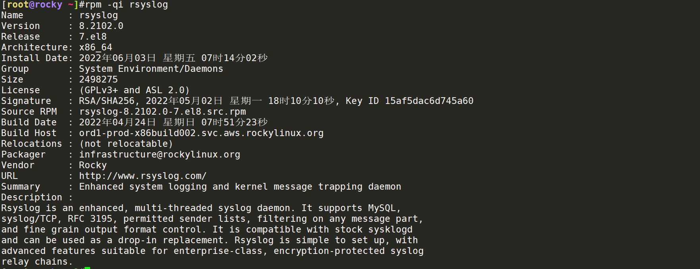
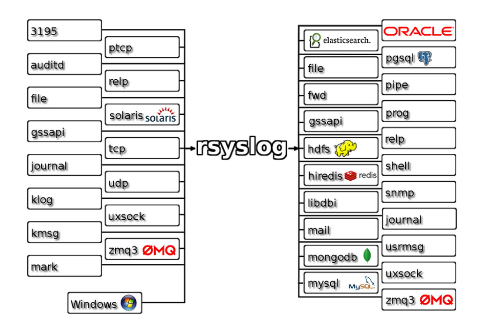
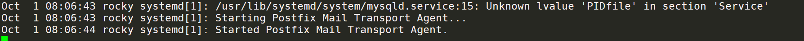
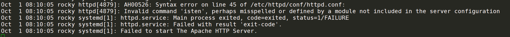
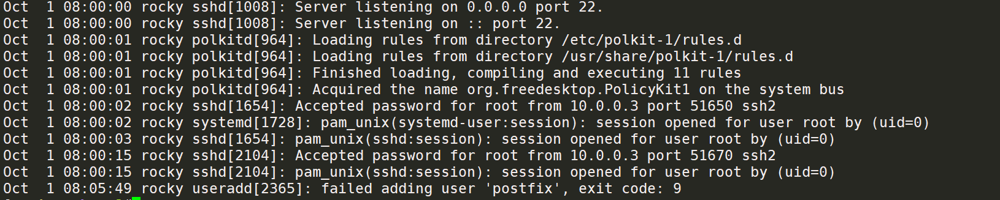
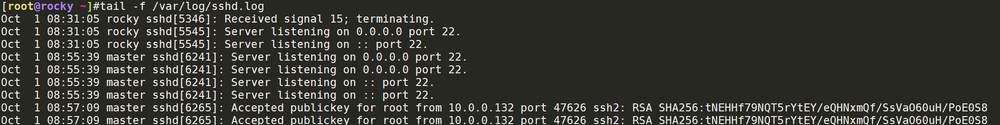
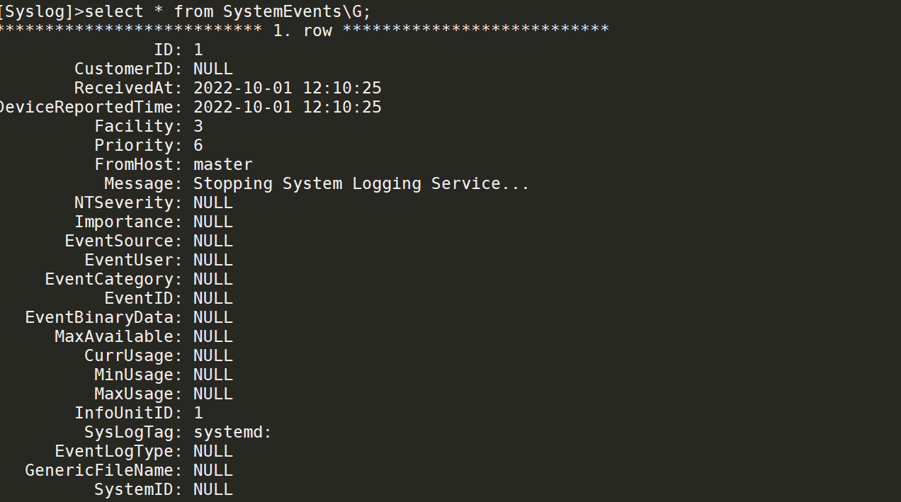
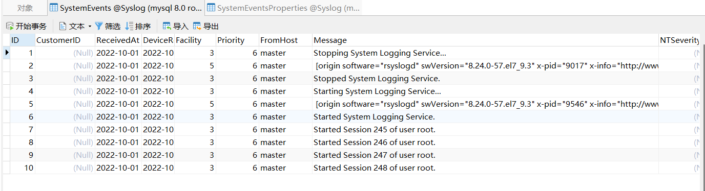
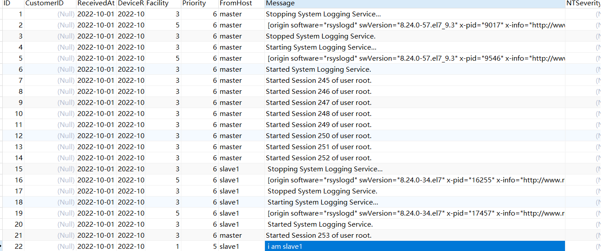
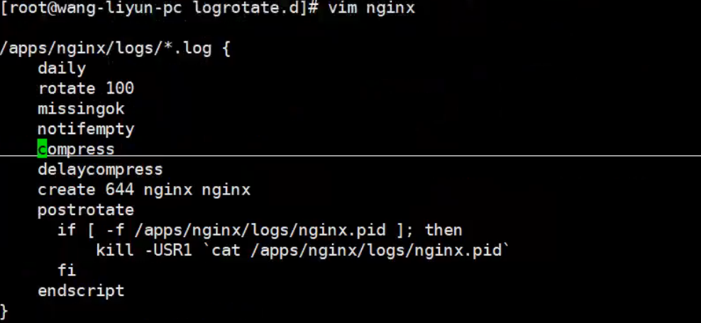

日志服务 众多服务器，API接口等：可以转储到数据库中进行存储日志，例如存储到MongoDB中取查看
日志服务的转储和切割，很有意义
定义日志的记录级别
日志的分类：应用日志+内核日志，app log+kernal log
rsyslog服务：Cent OS7往后的服务，日志可以统一记录到MySQL内，可以通过rsyslog统一推送到不同的服务内
[root@rocky postgresql]#rpm -qa rsyslog

可将例如系统的内核日志，或者tcp/udp的服务日志，推送到例如ES，文件（典型），hdfs大数据平台，mail（邮箱），mongodb文档数据库，MySQL数据库等
rsyslog就是类似一个管道，负责推送服务日志到指定的地方，例如docker的容器日志（容器也要映射端口出来），或者是service对外也是30000随机端口，证明也是TCP协议的服务，可以通过rsyslog来推送

ELK服务：elastic search+logstash+kibanna 其实ES就是一个数据库来的，一个索引=MySQL内的一个库
ES：开源的搜索引擎，负责收集源端的业务服务日志源，例如nginx，tomcat等
logstash：日志存储引擎，对日志进行收集、分析、过滤filter等
kibana：提供一个有好的界面
rsyslog管理 1.facility设施：将应用程序日志进行分类
1 2 3 4 5 #内置分类
2.priority优先级，日志记录优先级，告警的优先级，比如说达到warning或者error才记录到对应的日志引擎中
1 debug调试，info通知(notice)，warning警告，error报错，critical重要(阿里云打电话通知)，alert等
3.查看rsyslog的配置文件，主配置文件.conf，默认配置
rules规则内，mail.*表示只要是mail的事件，不关心优先级priority，直接写入到日志内，异步写入
*.info;mail.none;authpriv.none;cron.none
/var/log/messages —>系统日志general日志，所有事件的写入，排除mail，auth，cron，因为下面都有
只记录所有的info级别的日志，都会写入到里面，info、warning及以上
1 2 3 4 5 6 7 8 9 10 11 12 13 14 15 16 17 18 19 20 21 22 23 24 25 26 27 28 29 rpm -ql rsyslog
1./var/log/messages 系统日志，专门记录系统内所有的日志，操作，包括机器的启动，开机关机，守护进程的启动，启动顺序等，一般都是systemd下面的事件
比如我需要更新一下yum源，会记录安装的过程服务等
systemctl enable –now postfix

比如说我修改错一个.conf文件的语法，日志内会指出是45行出现了语法错误
vim +45 /etc/httpd/conf/httpd.conf

2.基于各种服务的日志 ssh服务的日志，日志记录级别是authpriv，在rsyslog里面有记录规则，是写到secure里面，主要和认证授权有关系，安全，任何关于安全的信息，都会记录
1 2 3 4 5 tail -f /var/log/secure --->基本都是一些认证之类的日志，这里有从VMNET链接过来的SSH登录信息

例子：修改SSHD服务的日志 先看sshd_config，可以修改他的默认级别，默认是authpriv，可以写local0-6的级别，local7为启动日志boot.log
1 2 3 4 5 6 7 8 9 10 11 12 13 14 15 16 17 18 19 20 21 22 23 24 25 26 27 "/etc/rsyslog.d/*.conf" mode="optional" )ls /var/log/sshd.log
远程推送日志：TCP/UDP514端口 环境：日志服务器/日志服务10.0.0.132
客户端主机：推送服务，10.0.0.128
可以开启TCP协议推送日志，port：514端口，服务模块：imtcp和imudp，都是安装rsyslog的时候安装好的，可以通过UDP：514来传输这个日志，也可以使用TCP端口514，比较靠谱
1 2 3 4 5 6 7 8 9 10 11 12 13 14 15 16 17 18 19 20 21 22 "imudp" ) type ="imudp" port="514" )"imtcp" ) type ="imtcp" port="514" )
将另外一台主机的SSH记录到10.0.0.132上面，默认开启的是514 UDP端口，也可以开启TCP协议，还可以一起使用都传输，写法如下
1 2 3 4 5 6 7 8 9 10 11 12 13 14 vim /etc/sshd/sshd_config

同理，也可以写例如/var/log/messages记录到远程主机，直接写例如，推送到远程主机上面
1 2 3 vim /etc/rsyslog.conf
常用日志 lastb：查看错误登录的日志信息，这个貌似是每天都会清理的
/var/log/messages：系统通用日志
自定义local级别，自定义服务的日志设施facility到指定目录，重启服务
mysqld.log，MySQL通用日志
nginx，access.log：访问日志
errer.log：错误日志等等，基本如果是Yum安装的话，都会默认记录在/var/log/下面
journalctl：显示日志信息的语句，查看语句
案例：使用MySQL进行日志的转储 1.环境配置 10.0.0.132 MySQL
10.0.0.128 rsyslog日志服务器
10.0.0.129 客户端，推送服务日志
1 2 3 4 5 6 7 8 9 10 11 12 13 14 15 16 17 18 19 20 21 22 23 24 25 26 27 28 29 30 31 32 33 34 35 128配置rsyslog服务$ModLoad imtcp$InputTCPServerRun 514cat 查看
2.安装rsyslog-mysql服务，推送日志 安装rsyslog-mysql
1 2 3 4 5 6 7 8 9 10 11 yum - y install rsyslog- mysql@rocky ~ ]#rpm - ql rsyslog- mysql/ usr/ lib/ .build- id/ usr/ lib/ .build- id/ e6/ usr/ lib/ .build- id/ e6/ aa0e40c19a2e0524d72780eee3b1698684cbe7/ usr/ lib64/ rsyslog/ ommysql.so/ usr/ share/ doc/ rsyslog/ mysql- createDB.sql/ usr/ share/ doc/ rsyslog/ mysql- createDB.sql 10.0 .0 .132 :/ root
查看mysql-create脚本，其实就是创建一个syslog日志库，需要创建一个日志同步账号，给这个库授权
1 2 3 4 5 6 7 8 9 10 11 12 13 14 15 16 17 18 19 20 21 22 23 24 25 26 27 28 29 30 31 32 33 34 35 36 37 38 39 40 41 42 43 44 45 46 47 48 49 50 51 52 [root@rocky ~ ]#cat mysql- createDB.sql CREATE DATABASE Syslog;CREATE TABLE SystemEventsint unsigned not null auto_increment primary key,bigint ,NULL ,NULL ,smallint NULL ,smallint NULL ,varchar (60 ) NULL ,int NULL ,int NULL ,varchar (60 ),varchar (60 ) NULL ,int NULL ,int NULL ,NULL ,int NULL ,int NULL ,int NULL ,int NULL ,int NULL ,varchar (60 ),varchar (60 ),VarChar (60 ),int NULL CREATE TABLE SystemEventsPropertiesint unsigned not null auto_increment primary key,int NULL ,varchar (255 ) NULL ,NULL / root/ mysql- createDB.sqlcreate user rsyslog@'%' identified by '123' ;grant all on Syslog.* to rsyslog@'%' ;> show tables;+ | Tables_in_Syslog | + | SystemEvents | | SystemEventsProperties | +
3.调用/usr/lib64/rsyslog/ommysql.so这个模块进行推送 编辑/etc/rsyslog.conf
1 2 3 4 5 6 7 8 9 10 11 12 $ModLoad imtcp$InputTCPServerRun 514$ModLoad ommysql

systemevents推送记录了系统日志

成功记录了slave1机器的日志
slave1的messages也推送到MySQL内
1 2 3 4 5 6 7 8 9 10 11 12 13 * .info;mail.none;authpriv.none;cron.none / var/ log/ messages* .info;mail.none;authpriv.none;cron.none @@10 .0 .0 .128 > select * from SystemEvents where message like '%am%' \G;* * * * * * * * * * * * * * * * * * * * * * * * * * * 1. row * * * * * * * * * * * * * * * * * * * * * * * * * * * 22 NULL 2022 -10 -01 12 :19 :29 2022 -10 -01 04 :19 :29 1 5

日志转储logrotate 切分日志，可以按照创建时间/日志文件大小来切分日志格式，比如可以一天创建一份日志，或者是达到100M自动生成一个新日志，类似mysql-binlog日志或者docker日志的max-size选项
还可以定义自动删除掉N天前的日志文件，保留最新的7天日志
包：logrotate
默认：一天执行一次拆分
1 2 3 4 5 6 7 8 9 10 11 12 13 14 15 16 17 [root@master tmp]if [ $EXITVALUE != 0 ]; then "ALERT exited abnormally with [$EXITVALUE ]" fi exit 0
logrotate配置文件 vim /etc/logrotate.conf
1 2 3 4 5 6 7 8 9 10 11 12 13 14 15 16 17 18 19 20
日志针对服务的转储策略，证明在/var/log下已经有这么多服务需要日志来记录了
ls /etc/logrotate.d
1 2 3 4 5 6 7 8 9 10 11 12 13 14 15 16 17 18 19 20 21 22 23 24 25 26 27 28 29 30 31 32 33 34 35 36 [root@rocky ~]cat httpdlog { true cat nginxlog { if [ -f /apps/nginx/logs/nginx.pid ];then kill -USR1 `cat /apps/nginx/logs/nginx.pid` --->nginx的特性，发现日志的名字修改后，重新生成日志文件fi

基于针对nginx服务做的日志切割，相关语法
日志转储测试 1 2 3 4 5 6 7 8 9 10 11 12 13 14 15 16 17 18 19 20 21 22 23 24 25 26 27 28 29 30 31 32 33 34 35 36 37 38 39 40 41 42 43 44 45 46 47 48 49 50 51 52 53 54 55 56 57 58 59 60 dd if =/dev/zero of=/var/log/test1.log bs=2M count=1dd if =/dev/zero of=/var/log/test2.log bs=2M count=1log log log {echo `date +%F_%T` >> /root/test1.log log log log